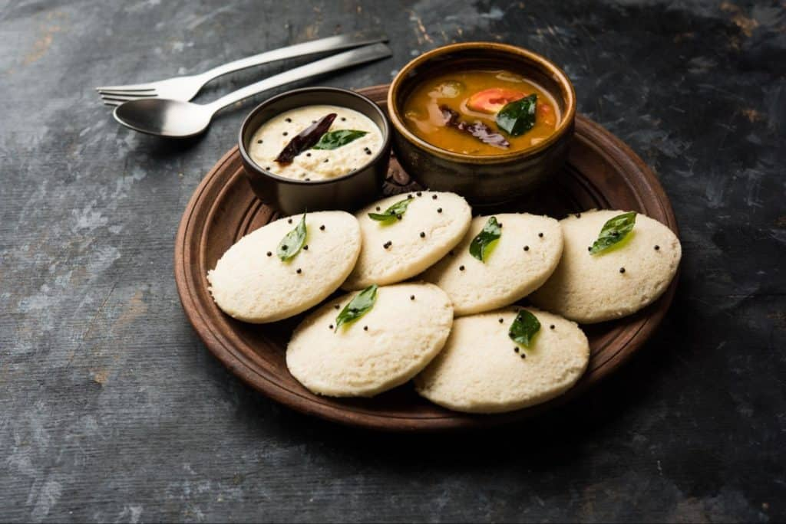

SouthIndianFoods
Despite the many formidable foods made within South India,
relatively few dishes have gained substantial popularity in the states.
Most of the rich, buttery Indian dishes popular in the US, such as crispy naan,
creamy butter chicken, and toasty samosas, originate from the Punjab region in northern India.
While these dishes are undoubtedly delicious,
they only represent a fraction of what India has to offer.
An Introduction To South India
South India is home to many of the world’s most coveted ingredients like curry leaves, peppercorns, tamarind, coconut, and chilies. Many dishes feature over a dozen different spices, allowing the spices to mingle and marry to create vibrant fireworks of flavor.
These dishes often prove a bit spicier than Northern Indian dishes, but don’t let that scare you off. There are some delicious mild options featured on this list that serve as a fantastic introduction to the mouthwatering cuisine that South India has to offer.
Get ready to make these dishes at home or order them on your next visit to a South Indian restaurant!
Idly-

One of the most popular dishes across the southern states, idli is made up of a delicious fermented lentil and rice batter. This mixture is steamed into circular molds that taste soft, tangy, yet pleasantly mild.
While idli is often paired with sambar (lentil and veggie thin stew) and coconut chutney, it can also be eaten on its own or even topped with a natural sweetener like coconut sugar.
More
Biryani-
- Mixing rice with zesty spices, crunchy vegetables, and hearty dumplings,
- Biryani is a delicious dish made throughout India dating all the way back to the Mughal Empire.
-
While the origins ot Biryani are hotly debated, this dish is popular all across India and has morphed into many different variations as it’s spread across the subcontinent and made its way south.
More
Food Information

{{ food.name }}
Type: {{ food.type }}
Price: Rs{{ food.price }}